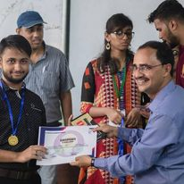

“They say the eye is the window to the soul, and the soul is said to be the source of all new innovision.” Soul ties are imperishable. They link us strongly to ourselves and to those who are around us, tethering the ever-lasting bonds we share with each other. With the ideal vision of joining us with our peers, and accentuating all the facets of Computer Science, we introduce to you, Innovision, the departmental fest for RCCIIT.
The Department of Computer Science and Engineering (CSE) was formed in 1999. The Department started its journey with an intake of 60 for UG program B.Tech in CSE approved by AICTE. The intake was enhanced to 90 in 2010 and further converted to 120 in 2017. The post graduate program M.Tech in CSE was introduced in 2012. The B.Tech-CSE program is one of the most sought after programs of the Institute, one of the reasons being consistently high rate of placement of CSE students through campus interview. Besides large number of students being placed in TCS, Cognizant, Wipro, Infosys and Capgemini, CSE alumni of RCCIIT are working in Google, Microsoft, Amazon and IBM. The PG program also draws some of the bright academic minds; some of them have recorded top positions in University. The B.Tech-CSE program first got NBA accreditation in 2016 for 3 years. Since then the department adheres to the outcome based education with CO, PO attainment monitored regularly and accordingly improvement on the overall outcome is continuously pursued. There is Departmental Academic Committee (DAC) comprising of all faculty members to look after the regular teaching-learning process while the Departmental Advisory Board (DAB), comprising of external members from industry (e.g. TCS) and research institute (e.g. ISI), guides the department on pedagogical reform, faculty up-gradation, project & research activities etc. B.Tech students are actively involved in doing project/internship/certificate courses and many extra-curricular and co-curricular activities that help in development of practical skills, values and professionalism which they should carry forward in their future career.
We aspire to prepare world class computing professionals who are resourceful and flexible enough to comprehend, develop and innovate in multidisciplinary domains and create opportunities for others.
We aspire to prepare world class computing professionals who are resourceful and flexible enough to comprehend, develop and innovate in multidisciplinary domains and create opportunities for others.